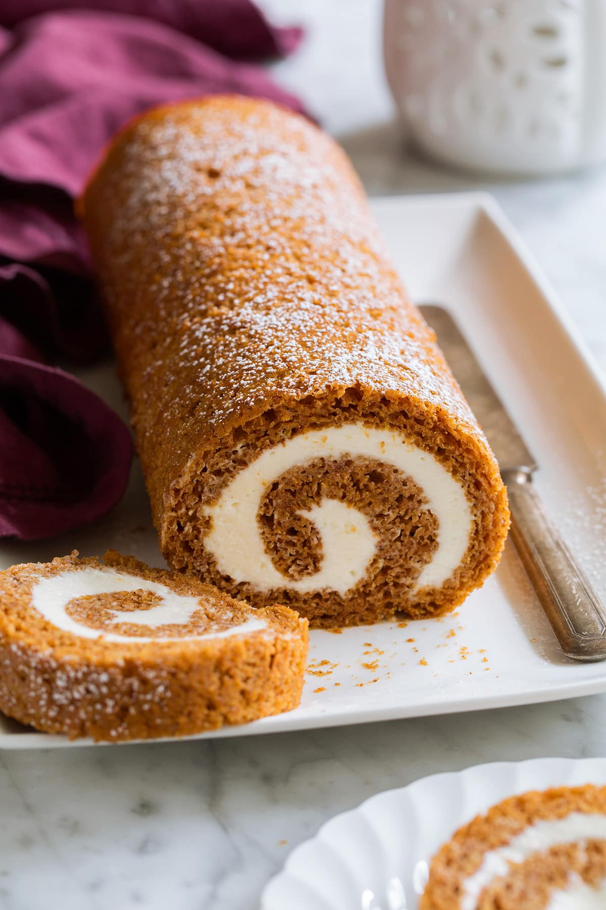

Granny Kat's Pumpkin Roll

This moist rolled cake has a rich cream cheese filling. Serve it cold. This will be a hit! It has a pinwheel look.
- ¾ cup all-purpose flour
- 1 cup white sugar
- 1 teaspoon baking soda
- 2 teaspoons pumpkin pie spice
- 1 cup pumpkin puree
- 3 eggs
- 1 teaspoon lemon juice
- 2 tablespoons confectioners' sugar
- 1 (8 ounce) package cream cheese, softened
- ¼ cup butter
- 1 teaspoon vanilla extract
- 1 cup confectioners' sugar
- Preheat oven to 375 degrees F (190 degrees C). Grease and flour a 9x13 inch jelly roll pan or cookie sheet.
- In a large bowl, mix together flour, sugar, baking soda, and pumpkin pie spice. Stir in pumpkin puree, eggs, and lemon juice. Pour mixture into prepared pan. Spread the mixture evenly.
- Bake at 375 degrees F (190 degrees C) for 15 minutes.
- Lay a damp linen towel on the counter, sprinkle it with confectioner's sugar, and turn the cake onto the towel. Carefully roll the towel up (lengthwise) with the cake in it. Place the cake-in-towel on a cooling rack and let it cool for 20 minutes.
- Make the icing: In a medium bowl, blend cream cheese, butter, vanilla, and sugar with a wooden spoon or electric mixer.
- When the cake has cooled 20 minutes, unroll it and spread icing onto it. Immediately re-roll (not in the towel this time), and wrap it with plastic wrap. Keep the cake refrigerated or freeze it for up to 2 weeks in aluminum foil. Cut the cake in slices just before serving.